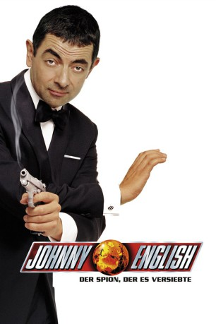
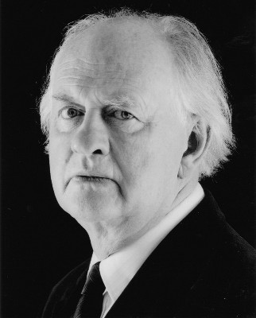

#1018 Johnny English
 
 IMDB-Wertung: 6.2 / 10
IMDB-Wertung: 6.2 / 10  Metascore: 51
Metascore: 51 
Johnny English ist britischer Agent beim MI7. Zwar ist er nicht mehr der allerjüngste und auch nicht der allerhellste Geheimdienstler im Service Ihrer Majestät, aber seine kleinen Schwächen macht er durch extremen Enthusiasmus wett. Und als Britannien vor seiner größten Krise steht, stolpert Johnny mittenhinein: Der finstere Franzose Pascal Sauvage hat die Kronjuwelen der englischen Königin in seinen Besitz gebracht und es außerdem auf den britischen Thron abgesehen. Die nationale Katastrophe beschert dem bisher eher bedeutungslosen Johnny plötzlich schnelle Autos, die neuesten Hi-Tech Gadgets und Geheiminformationen allererster Güte. Angespornt auch durch das Zusammentreffen mit der schönen Doppelagentin Lorna ist er wild entschlossen, dem hinterlistigen Sauvage den Garaus zu machen. Denn was kann einem auch besseres passieren, als sich zu verlieben und dabei noch ganz nebenbei die Nation zu retten?
Jahr: 2003
Dauer: 87 Minuten
FSK: 6
Land: England Studio: UIPTonspuren: DTS - ,
Untertitel: Deutsch,
Auflösung: 1080p (1920x1040) Größe: 8407 MB
Genre: Action, Komödie, Abenteuer
Regisseur: Peter Howitt
Drehbuch: Neal Purvis, Robert Wade, William Davies, Peter Howitt
Soundtrack: Ed Shearmur
Darsteller:
 Rowan Atkinson als Johnny English
Rowan Atkinson als Johnny English- Tasha de Vasconcelos als Countess Alexandra - Exotic Woman
 Ben Miller als Bough, English's Sidekick
Ben Miller als Bough, English's Sidekick- Greg Wise als Agent One
 Kevin McNally als Prime Minister
Kevin McNally als Prime Minister Tim Pigott-Smith als Pegasus, Head of MI7
Tim Pigott-Smith als Pegasus, Head of MI7 Nina Young als Pegasus' Secretary
Nina Young als Pegasus' Secretary- Natalie Imbruglia als Lorna Campbell
 John Malkovich als Pascal Sauvage, the Greedy Frenchman
John Malkovich als Pascal Sauvage, the Greedy Frenchman-  Oliver Ford Davies als Archbishop of Canterbury
- Takuya Matsumoto als Sushi Waiter
- Kevin Moore als Doctor
- Marc Danbury als Guard
 Jenny Galloway als Foreign Secretary
Jenny Galloway als Foreign Secretary James Greene als Scottish Bishop
James Greene als Scottish Bishop- Trevor McDonald als Newscaster
 James Embree als Sauvage Henchman , uncredited
James Embree als Sauvage Henchman , uncredited- Peter Howitt als Man at Crowning Ceremony , uncredited
- Serena Lorien als Flag Purchasing Girl , uncredited
- Scott Samain als Royal guest , uncredited
 Prunella Scales als The Queen , uncredited
Prunella Scales als The Queen , uncredited Glenn Webster als Man at Crowning Ceremony , uncredited
Glenn Webster als Man at Crowning Ceremony , uncredited- Yana Yanezic als Sauvage's Secretary , uncredited
- Douglas McFerran als Carlos Vendetta
 Steve Nicolson als Dieter Klein
Steve Nicolson als Dieter Klein Terence Harvey als Official at Funeral
Terence Harvey als Official at Funeral- Rowland Davies als Sir Anthony Chevenix
- Philippa Fordham als Snobby Woman
- Tim Berrington als Roger
- Simon Bernstein als Assailant
- Martin Lawton als Hearse Driver
- Neville Phillips als Priest
- Peter Tenn als Sushi Bar Customer
- Sam Beazley als Elderly Man
- Faruk Pruti als Truth Serum Guard
- Jack Raymond als French Reception Waiter
- Haylie Ecker als String Quartet
- Tania Davis als String Quartet
- Eos Chater als String Quartet
- Gay-Yee Westerhoff als String Quartet
- Chris Tarrant als Radio Announcer
- Clive Graham als Welsh Bishop
- Philip Harvey als Curtain VIP , uncredited
- Norman Campbell Rees als Sauvage Henchman , uncredited
- Laurence Richardson als Man at Crowning Ceremony , uncredited
- Leonard Silver als Butler , uncredited
Datei: X:\3-Trilogie(G-M)\Johnny English\Johnny English (2003, FSK6, 1920x1040).mkv seit 07.05.2015
Festplatte: HD Collection-2(A-Z)-3(A-M)
 Alle Filme aus Gruppe '3-Trilogie(G-M)\Johnny English'
Alle Filme aus Gruppe '3-Trilogie(G-M)\Johnny English'